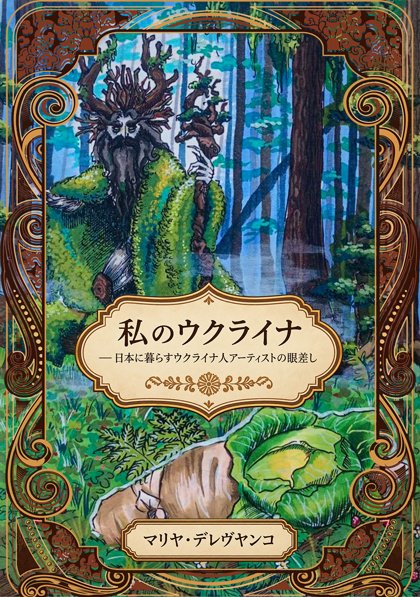
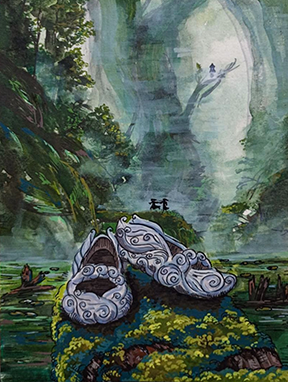
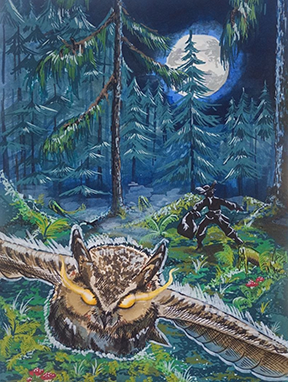
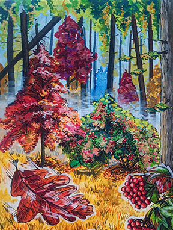

マリアはイラストを通して、ウクライナの文化遺産や民間伝承、そして人々と自然との深いつながりを描いています。
Through her illustrations, Mariya explores Ukrainian heritage, folklore and the connection between people and nature.
Fairytales from the Apostolove Region of Ukraine
日本・大阪で活動するウクライナ人アーティスト マリヤ

この画集はまもなく発売されます。ご予約はお問い合わせください。
This artbook will be available soon. Please contact us to preorder!
この画集には、物語のために制作されたすべてのイラストに加え、追加のアートワーク、象徴的な意味についてのマリヤの解説、そして彼女にインスピレーションを与えたウクライナの風景写真が収録されています。
This artbook contains all illustrations created for the tales, additional artworks, Mariya's explanations of symbolism, and photographs of Ukrainian landscapes that inspired her.

伝統的な色彩や模様、豊かな自然、そしてウクライナ独自の象徴からインスピレーションを受け、マリアの作品は、ウクライナ芸術が持つ温かさと本来の魅力を世界へ届けています。
Inspired by traditional colors, patterns, nature and Ukrainian
symbolism, Mariya's work shares the warmth and authenticity of
Ukrainian art with the world.

マリアはイラストを通して、ウクライナの文化遺産や民間伝承、そして人々と自然との深いつながりを描いています。
Through her illustrations, Mariya explores Ukrainian heritage, folklore and the connection between people and nature.
マリヤが、自身のストーリーやインスピレーションの源、そして作品に込めた想いについて、じっくりと語るインタビューをお届けします。
Mariya will share her story, inspirations, and the meaning behind her artworks in a longer interview. インタビューの全文を読む →
